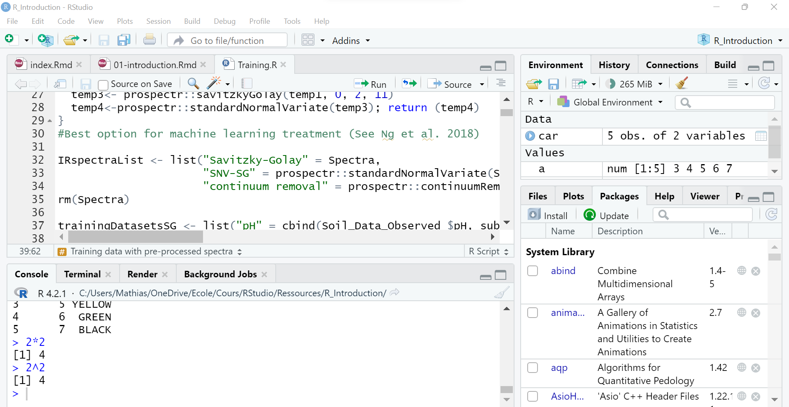

R Introduction Course
R is a free and open source system developed by the R
Ressources
The R community is well developed online and you can found many resources on several websites.
For the basics resources you have:
- https://cran.r-project.org/: R original deposit of the CRAN.
- https://rstudio.com/products/rstudio/: Rstudio the most commly used IDE for R.
- https://Github.com: GitHub a website with developers codes and packages freely accessible. Also some topics about issues and bug in R.
To solve coding problems and bugs:
Installing R and dependancies
R and Rstudio
First you will need to install R on https://cran.r-project.org/. Choose the fitted version for your computer system.
Then you will need an Integrated Development Environment (IDE) which allows you to have a more comprehensive overview and easier access to packages and other online features from R. The most commonly used IDE fro R is Rstudio. You can download it via https://rstudio.com/products/rstudio/download/#download, select the free version for you exploitation system.

R Packages
If R already handle may data the true power of this language is to have more than 10 000 additional packages freely available online. Most of them can be directly download on the CRAN website while others will be accessible only via their GitHub deposit.
To download the package you have several different solutions:
- The easiest way is using the Package windows of Rstudio and directly download it from the CRAN deposit.
- You can also use the following code to download it
install.packages("") - If the package is not available on the CRAN deposit you can directly download it from the GitHub site. You will need first to download the “remote” package to access online content. Then you can type the URL of the link to your package.
install.packages("remotes") #install "remotes" package.
devtools::install_github("philipp-baumann/simplerspec", force = FALSE) # The "force" parameter as to be put on TRUE or FALSE depending if you want to overwritte your previous download of the package- Last but not least, you can manually download the
.zipor.tar.gzof the package online and unpacked it via the package windows of Rstudio or directly to your R folder (@ref(REnvironment))
Once you download the package you have to load it to your environment. You can do it with the line library() , you will have to do it every time you start a new session in R.

First overview of R
Basic commands
You can open a new R window to start typing some code.
R is based for statistical treatment so number and operation are one of the most important component of this language. You can type basic operation to get familiar with the syntax:
> 2+3
[1] 5
> 2*3
[1] 6
> 2^3
[1] 8Special operators can also be used
> pi
[1] 3.141593
> sqrt(2)
[1] 1.414214For letters and other characters you can use the print()command. It does work for special operators but not if several are used at the same time.
> print("Hello World")
[1] "Hello world"
> print(pi)
[1] 1.414214
> print("The zero occurs at", 2 * pi, "radians.")
Error in print.default("The zero occurs at", 2 * pi, "radians."):
invalid 'quote' argumentTo be able to use both numeric or special operators and characters use the cat() command. You need to end it with the "\n" code.
> cat("The zero occurs at", 2 * pi, "radians.", "\n")
The zero occurs at 6.283185 radians.
An important topic is the help() command (in Rstudio ? can also work). This function will give access to the helping and description page of the command you are typing inside the strings. With an internet connection on Rstudio the ?? line will give you information on your command even if it is coming from a non downloaded package.
Setting variables
Analyzing data is important but if we can not store them we won’t be able to go very far. You can store any variable with the <- or = code. The most important variables are numbers and character string.
> x <- pi
> y = 2*2
> print(x*y)
[1] 12.56637On the upper code line it is a number variable storage (Numeric values).
> a <- "The zero occurs at"
> b = "radians."
> cat(a, 2 * x, b, "\n")
The zero occurs at 6.283185 radians.On the upper code line it is two character string variables storage (Character values) combined with a number variable.
We can also give a vector several numbers (Vector of numbers) or several characters (Vector of character strings) with the code line c().
> a <- c("Red", "Blue", "Green", "Black", "White")
> b <- c(5, 6, 6, 8, 11)
> print(a)
[1] "Red" "Blue" "Green" "Black" "White"
> b
[1] 5 6 6 8 11To know the mode/class of your variable you can use the mode() or class()command.
> class(a)
[1] "character"
> class(b)
[1] "numeric"
> mode(print)
[1] "function"Two other important command are ls() which gives you your number of saved variable and rm() which remove one variable. ls.str() is a transformed way to see the content of each variables and not only there name. You can remove all your variable by making rm(list = ls()). The c(1:10) used here give a vector list of ten numbers from 1 to 10.
> y <- 3
> y <- "Red"
> z <- c(1:10)
> ls()
[1] "x" "y" "z"
> ls.str()
x : num 3
y : chr "RED"
z : int [1:10] 1 2 3 4 5 6 7 8 9 10
> rm(list = ls())
> ls()
character(0)You can combine vectors together in order to create matrices in the first time. There are different way of combining them. When can combine the different vector numbers with c() and then give a specific dimension x,y to the combined vector with dim(x,y) command. Or we can directly combine the two vectors as different colons from one matrix with cbind(col1, col2) or if you prefer combining via the rows with rbind(row1, row2).
> b <- c(5, 6, 6, 8, 11)
> d <- c(12, 3, 4, 5, 6)
> matrix <- c(b,d)
> matrix
[1] 5 6 6 8 11 12 3 4 5 6
> dim(matrix) <- (2,5)
> print (matrix)
[,1] [,2] [,3] [,4] [,5]
[1,] 5 6 11 3 5
[2,] 6 8 12 4 6
> matrix <- cbind(b, d)
> print(matrix)
b d
[1,] 5 12
[2,] 6 3
[3,] 6 4
[4,] 8 5
[5,] 11 6
> dim(matrix)
[1] 5 2
> matrix <- rbind(b, d)
> print(matrix)
[,1] [,2] [,3] [,4] [,5]
[1,] 5 6 11 3 5
[2,] 6 8 12 4 6
> dim(matrix)
[1] 2 5
> class(matrix)
[1] "matrix" "array" NOTICE!
Thank you for noticing this new notice! Your noticing it has been noted, and will be reported to the authorities!
Note
Note that there are five types of callouts, including: note, warning, important, tip, and caution.
The type array is difficult to explain and not commonly used. It can be seen as multi-dimensional n-matrices or if characters and numbers are mixed into a matrix. We will prefer data frame format of list format for combining different types of data. however, if you want more precision on array data you can look into @long_r_2019 pp.131 - 132.
Another type of important data is
| Object | Example | Mode |
|---|---|---|
| Number | 3.1415 | Numeric |
| Vector of numbers | c(2.7.182, 3.1415) | Numeric |
| Character string | “Moe” | Character |
| Vector of character strings | c(“Moe”, “Larry”, “Curly”) | Character |
| Factor | factor(c(“NY”, “CA”, “IL”)) | Numeric |
| List | list(“Moe”, “Larry”, “Curly”) | List |
| Data frame | data.frame(x=1:3, y=c(“Moe”, “Larry”, “Curly”)) | List |
| Function | print() | Function |
RStudio Environment
Project
When you are opening a new